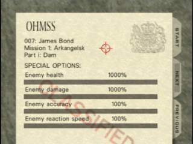

|
| Soluce
Goldeneye : Mode 007 |
|
| Soluce
Goldeneye : Mode 007 |
Lorsque
vous avez fini tout le Jeu en Agent, Secret Agent et 00 Agent, vous accedez
au Niveau de Difficulté 007. Vous ne pouvez PAS finir les Missions
en 007, et y aura jamais de Petite Encoche Rouge à coté
de 007. C'est juste pour s'amuser à parametrer le Jeu. |

| Enemy
Health |
L'Energie
des Ennemis ! |
| Enemy
Damage |
Les Dommages qu'il vous infligent ! |
| Enemy
Accuracy |
Leur
Précision lorsqu'ils tirent ! |
| Enemy
Reaction Speed |
Leur
Temps de Réaction ! |
| Mode
License To Kill en Solo ! |
Je
l'appelle comme ça, car ça lui va bien. C'est un Parametre
qui fait que lorsque vous jouez en 007, TOUS les Ennemis meurent en UNE
Balle, meme dans le Pied. En revanche, pour vous c'est le meme traitement
! Il suffit de tout mettre à fond sauf l'energie des ennemis (Enemy
Health) et voilà. Evidemment, n'essayez meme pas des Missions genre
Surface ou Streets, car les Gardes vous tuent à 50 Bornes !! |